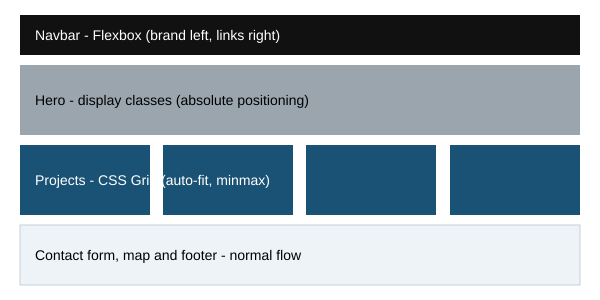

1. Semantic HTML
Using elements such as header, nav, main, and footer to describe the meaning of content.
W3.CSS Architect Analysis
An analysis of HTML5 and CSS in a modern informational web page
This site analyzes how HTML5 and CSS are used in the W3.CSS "Architect" template from W3Schools, a one-page site for a fictional firm called "BR Architects". The analysis comes from reading the template's source code and the W3.CSS 6 stylesheet, and from comparing both with how the page renders in a browser.
Key finding: the page uses Flexbox for the navigation bar, CSS Grid for the galleries, and absolute-position display classes for the hero, with no JavaScript, no web fonts, and no custom stylesheet. It uses semantic elements well, but it lacks a main element and a lang attribute, and its navigation disappears on phones.
The head of the template declares UTF-8 and a viewport meta tag, and links one external stylesheet, w3.css version 6. The source shown in the Try-it editor starts with the html tag, so it has no DOCTYPE, no lang attribute, and a generic title ("W3.CSS Template").
| Element | Where it appears | Assessment |
|---|---|---|
header#home | Hero photo with the h1 "BR Architects" | Correct: introductory banner and link target |
nav | Projects, About, Contact links | Correct, but the brand link sits outside it |
section (x3) | Projects, About, Contact | Correct: each opens with an h2 and has an id |
form | Contact form | Valid, but fields have no labels |
footer | "Powered by w3.css" credit | Correct |
main | Not present | Missing landmark |
required, so the browser validates the form without JavaScript.label elements, and the comment field is a single-line input instead of a textarea.<label for="email">Email</label>
<input id="email" type="email" name="Email" autocomplete="email" required>The template has no style block and no stylesheet of its own. Appearance comes from W3.CSS classes plus 14 inline style attributes. The navigation bar alone carries six classes.
| Class | Declaration | Effect |
|---|---|---|
w3-flex | display:flex | Brand and links sit in one row |
w3-top | position:fixed; top:0 | Bar stays at the top |
w3-wide | letter-spacing:4px | Widely spaced letters |
w3-padding | padding:8px 16px | Space inside the bar |
w3-card | box-shadow | Soft shadow under the bar |
h1{font-size:36px}*,*:before,*:after{box-sizing:inherit}.w3-striped tbody tr:nth-child(even)W3.CSS 6 marks many utilities !important, so an inline style cannot beat .w3-padding but can beat .w3-content.

grid-template-columns: repeat(auto-fit, minmax(300px, 1fr));
gap: 16px;The browser fits as many 300 px columns as it can, so no media queries are needed.
| Browser width | Columns |
|---|---|
| Below about 648 px | 1 |
| About 648 to 963 px | 2 |
| About 964 to 1279 px | 3 |
| 1280 px and wider | 4 |
Weakness: the w3-hide-small class hides the whole menu at 600 px and below, with no replacement. A details and summary menu would fix this without JavaScript.
Using elements such as header, nav, main, and footer to describe the meaning of content.
Small single-purpose classes, such as w3-padding, stacked on an element to build its look.
A one-dimensional layout system, used in the template for the navigation bar.
A two-dimensional layout system, used for the project and team galleries.
The rules that decide which declaration wins, including the effect of !important and inline styles.
Layouts that adapt to any screen width and stay usable with a keyboard or screen reader. Hiding content is not free.
This site is Milestone 1 of the IT 3203 web development project. It presents my Assignment 2 research on the W3.CSS "Architect" template as a scrolling site built with HTML and one CSS file. Later milestones will add more content and features.